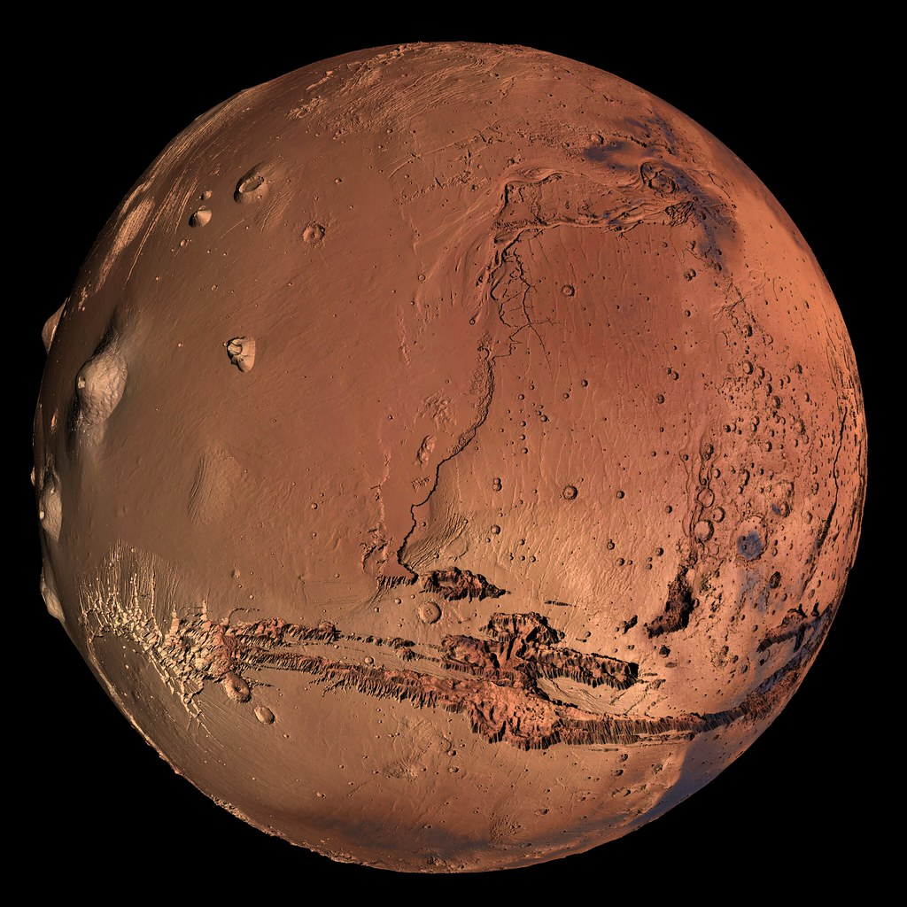
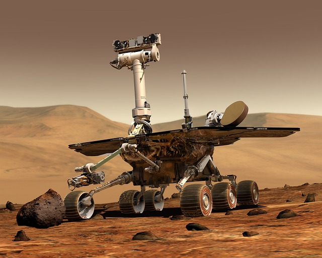

La planete mars est le quatrieme corps celeste de notre systeme solaire elle a
ete convoitiser par de nombreuse civilisation durant les siecles elle posède 2 satellites naturels (phobos,déimos)

La planete mars est le quatrieme corps celeste de notre systeme solaire elle a
ete convoitiser par de nombreuse civilisation durant les siecles elle posède 2 satellites naturels (phobos,déimos)

Comme la Lune, Mars est une destination riche pour la découverte scientifique et un moteur de technologies qui permettront aux humains de voyager et d’explorer loin de la Terre.
Ce que nous apprendrons sur la planète rouge nous en dira davantage sur le passé et le futur
de notre Terre et pourrait nous aider à déterminer si la vie existe au-delà de notre planète natale.
Mars est notre plus proche voisine habitable, située à environ 225 millions de km de la Terre.
De la glace d'eau a été découverte aux pôles et dans le sous-sol martien.
Une journée martienne dure 24h39min, proche du rythme circadien humain.
Avec une moyenne de -63°C, Mars est froide mais pas aussi extrême.